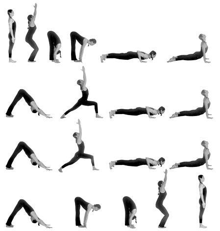

<ion-view view-title="Tutorial">
  <ion-content class="pagina-tutorial">
    <div class="card">
  <div class="item item-text-wrap">
    ÁSANA: técnicas corporais, as posições do Yôga. Para ser um ásana, uma posição deve ser estável, confortável, com a respiração consciente, profunda e ritmada,e uma atitude interior que envolva a localização da
consciência, a mentalização de imagens, cores ou sons e muito sentimento.
  </div>
</div>
    
  </ion-content>
</ion-view>
